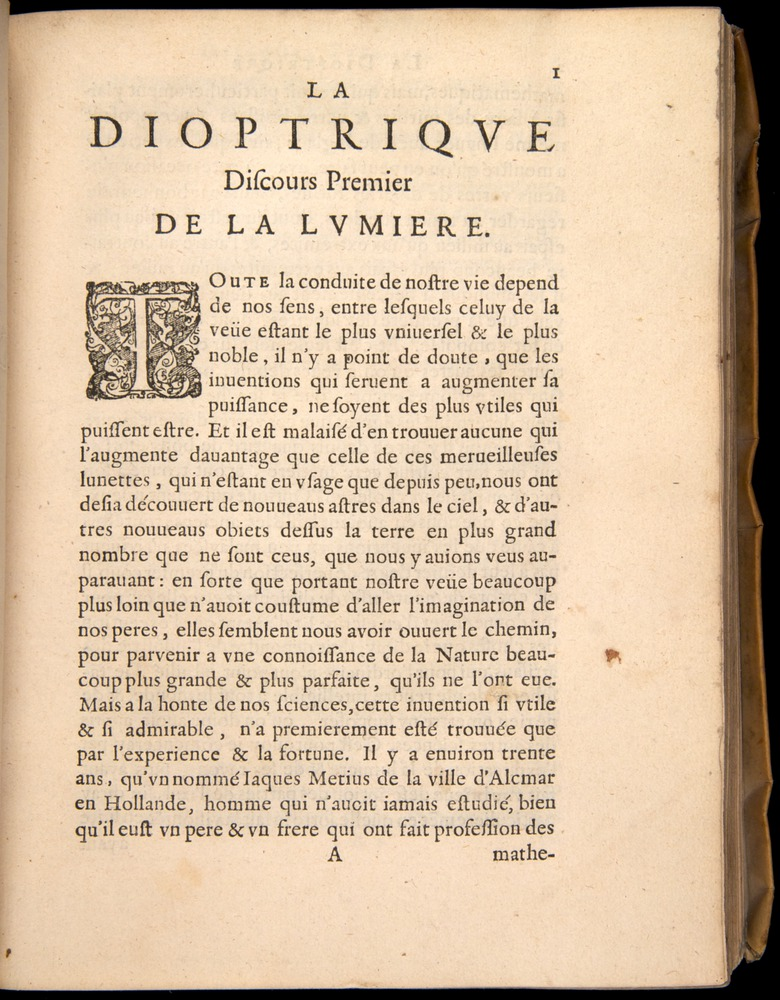
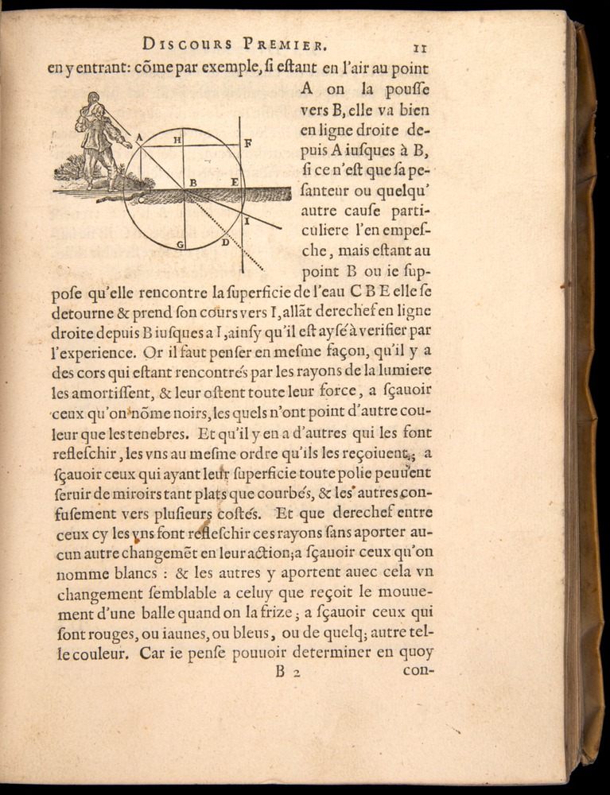
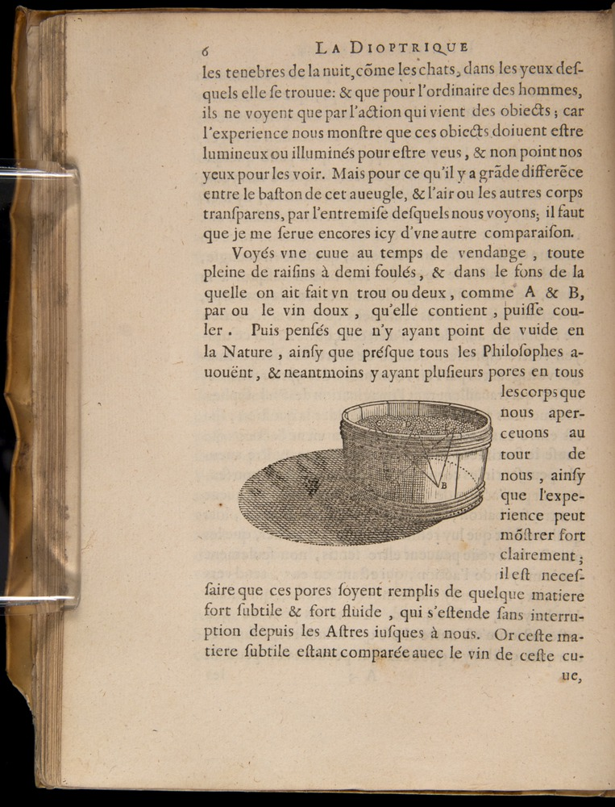
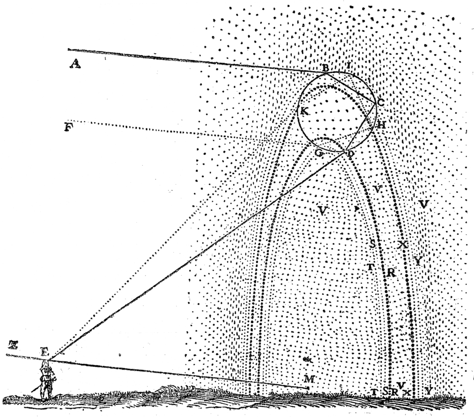
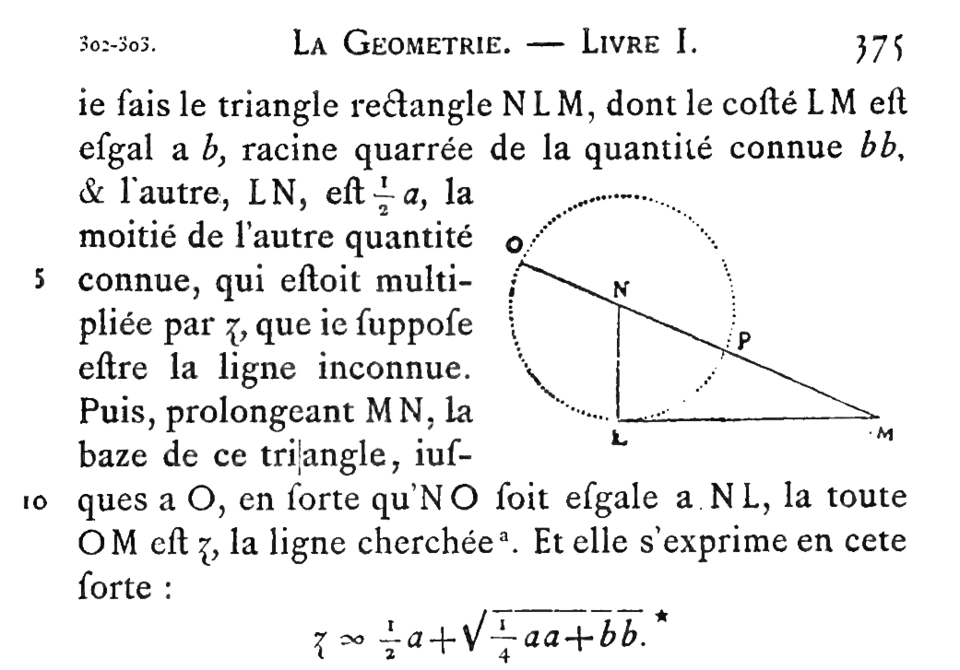
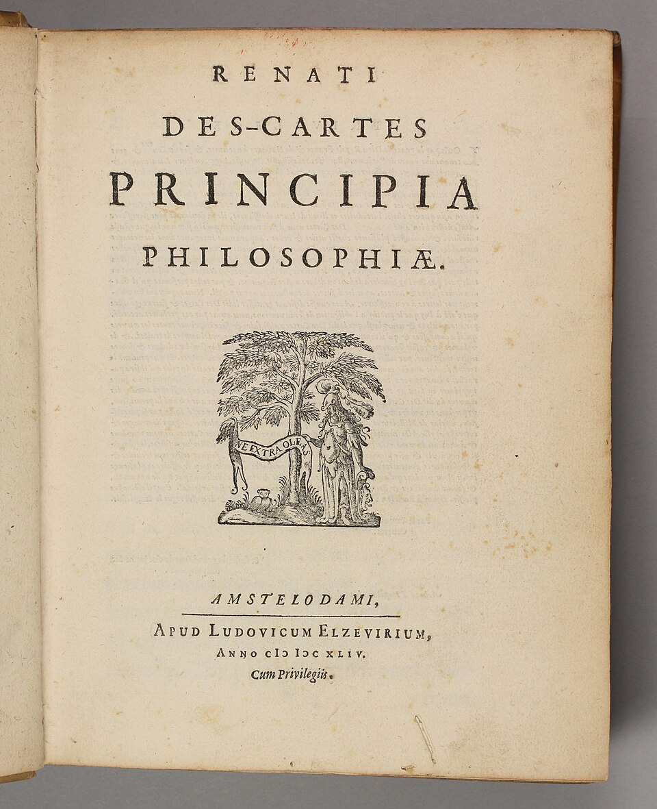
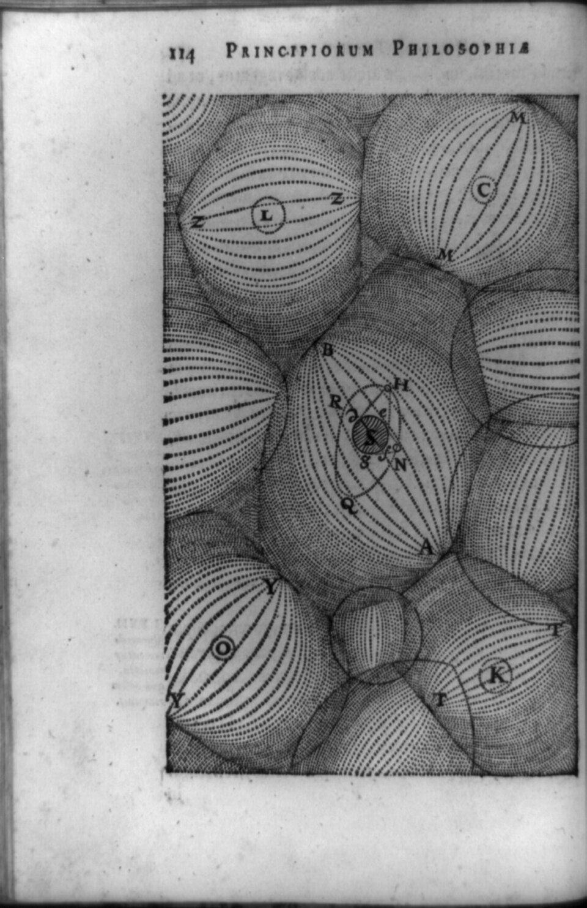

序言本身：六个部分
笛卡尔自己在开头说，这本书"如果太长不宜一次读完，可以把它分成六个部分"。他还特意声明：这只是谈谈（discours）而非论（traité），是"讲个故事，或者说讲一则寓言"——用第一人称、法文而非拉丁文写作，是为了让"连女人都能读懂"（这句在 1637 年是激进的姿态，不是轻慢）。
- 一、对各门学问的考察——他在拉弗莱什学院学过的一切，为什么让他失望。
- 二、方法的四条主要规则。→ 四规则原文见核心概念 VI
- 三、从这套方法中引出的临时道德准则——拆房子期间得先租个住处。这一部分常被跳过，其实是理解笛卡尔的关键：他非常清楚普遍怀疑不能拿来过日子。
- 四、形而上学的根据——"我思故我在"与上帝存在。这就是那句名言的出处：je pense, donc je suis。
- 五、自然学问题的次序——心脏与血液运动（他在这里全盘接受了哈维的血液循环，但对心脏的机制给了一个错误的热力学解释），以及人与机器的两条判据。→ 见「机器与心灵」
- 六、为什么他决定发表——以及为什么之前决定不发表。伽利略的名字没有出现，但整段都在说这件事。
屈光学：一条对的定律，一个错的理由
三篇附录的第一篇。笛卡尔在这里给出了折射定律的正弦形式——这是它第一次被公开发表。法语世界至今称之为"笛卡尔定律"（loi de Descartes）或"斯涅尔-笛卡尔定律"。


优先权：一条比通常讲的长得多的链条
| 时间 | 人物 | 状态 |
|---|---|---|
| 约 984 年 | Ibn Sahl（伊本·萨赫勒） | 《论燃烧镜与透镜》手稿，巴格达。已给出等价于折射定律的几何构造，并据此计算非球面透镜 |
| 约 1601 年 | Thomas Harriot | 已用正弦关系处理折射，终身未发表 |
| 1621 年 | Willebrord Snellius | 独立推出等价形式，生前未发表 |
| 1637 年 | Descartes | 《屈光学》，首次公开发表并给出正弦形式 |
本站的措辞：接触存在，剽窃未证。圈子里流传过，不等于笛卡尔读过；读过，也不等于他的推导依赖它。两个极端说法（"完全清白"与"确凿剽窃"）都超出了现有证据。
那个错误的推导
笛卡尔用了一个网球类比：光像一颗球打穿介质分界面。问题在于，要让这个模型推出已知正确的折射角关系，他必须假设光在密介质中跑得更快——这与实际正好相反，甚至与网球本身的直觉相反（球打进水里应该变慢）。
费马 1662 年用最短时间原理重新推导，前提与笛卡尔完全相反：光在密介质中更慢。费马的假设是对的。

他真正的光学成就：非球面镜片
1626 年前后，笛卡尔与 Claude Mydorge 合作研磨透镜。《屈光学》第八论中他证明了双曲线与椭圆是"完美折射曲线"（anaclastic）——能把平行光精确汇聚到一点，从而消除球面像差。 他甚至设计了磨制这种镜片的机器。这不是纸上谈兵：他是一个亲手做光学器件的人。
气象学：他算出了彩虹的角度
第八论是三篇附录里最漂亮的一段工作，也是科学史上第一次用实验加几何计算正确解释彩虹的位置。
方法极硬核：他用一个盛满水的大玻璃球模拟一滴雨，逐条追踪光线，用折射定律配合三角函数表，寻找偏转角的极值——因为光线在极值附近会堆积，那里才会亮。 结论是：主虹出现在约 41–42°，副虹（多一次内反射，因而上下颠倒）约 51–52°。

这幅图之所以是科学史的里程碑，在于它把一个天象还原成了一滴水的几何——而且答案可以被算出来，也可以被一只盛水的玻璃球验证。 Wikimedia Commons · 公有领域
所以准确的说法是：笛卡尔解释了彩虹在哪里，牛顿解释了它为什么是彩色的。
几何学：他做的事，比"发明坐标系"更根本
三篇附录的压轴，也是三篇里唯一一篇至今仍在改变世界的。但它做的事情和大众印象差得很远。
他真正的突破：让代数运算在几何里封闭
古希腊几何有一个硬约束：两条线段相乘得到的是面积，三条相乘得到体积，四条相乘就没有意义了——因为空间只有三维。这个"齐次性"约束把代数死死卡在三次以内。
笛卡尔在《几何学》开篇干的第一件事，就是给出线段乘法、除法、开方的几何构造：两条线段的积，仍然是一条线段。约束一旦解除，代数就彻底自由了——四次、五次、任意次方都有了几何意义。

请仔细看那一行公式，它揭穿了两个流传很广的说法： 未知数写作 z 而不是 x；平方写作 aa、bb 而不是 a²、b²；等号是一个形似 ∝ 的符号，不是今天的 =。 笛卡尔确实推动了现代数学记号，但他本人的书页并不长这个样子。 Wikimedia Commons · 公有领域
帕普斯问题：那个把他逼出新数学的题目
古希腊人（帕普斯、阿波罗尼乌斯）只解决了三线、四线的特殊情形，四线情形的轨迹是圆锥曲线，帕普斯给了结论却没有证明。笛卡尔在《几何学》里不但用代数方法证明了四线情形，还给出了处理任意 n 条线一般情形的方法。 据学者考证，正是 1632 年前后对这道题的钻研，直接催生了他"几何学的新秩序"这一成熟的数学纲领。
符号：哪些是他的，哪些不是
- 是他的：用指数上标（x³）取代此前笨重的缩位记数法。这被数学史家称为一次巨大的革新。
- 是他标准化的，不是他发明的：用 a, b, c 表已知量、x, y, z 表未知量。字母代数的框架 1591 年韦达（Viète）已经建立，笛卡尔做的是改良与定型。
- 存疑：为什么偏偏是 x。一说他 1629 年手稿里已这么用；另一说是排字工人的选择（法文里 y、z 常用、铅字不够，x 富余）。两说并存，无定论。
- 笛卡尔符号法则：多项式正实根的个数，至多等于系数序列的变号次数，且与之相差偶数。他在《几何学》里不加证明地给出——第一个严格证明要等到 1740 年（de Gua de Malves），高斯 1828 年进一步改进。
后来：《哲学原理》里的物理学，和它输掉的那一仗
1644 年，阿姆斯特丹，Elzevir。笛卡尔在《哲学原理》里把整套自然哲学系统化——这才是他心目中的主业。 
他确实领先的地方：惯性
- 第一自然律（II.37）：任何事物只要其自身条件允许，总保持同一状态；一旦运动起来，便始终持续运动。
- 第二自然律（II.39）：一切运动就其本身而言都是沿直线的；因此做圆周运动的物体总倾向于远离圆心。
第二条尤其关键：伽利略还停留在"圆惯性"的观念里，笛卡尔明确说了是直线。这两条后来被牛顿吸收合并，成了牛顿第一定律的直接来源。这是他在物理学史上货真价实的贡献。
他输掉的地方（一）：守恒量选错了
笛卡尔定义的守恒量是"运动的量"= 大小 × 速率——一个标量，只有大小没有方向。这与现代动量（矢量）差了关键的一步。 后果是那七条碰撞规则：第四条（《哲学原理》第二部分第 49 条）说，一个较小的物体无论速度多快，都永远无法推动一个较大的静止物体。 这条规则与任何人的日常经验直接冲突——一颗子弹显然能推动一块砖。

这张图值得多看一会儿：它是第一幅把太阳画成众多恒星之一、且不给宇宙设中心的图。物理是错的，胆量是对的。 Wikimedia Commons · 公有领域（美国国会图书馆藏）
他输掉的地方（二）：涡旋宇宙
既然真空不可能（广延即物体，哪里有广延哪里就有物体），宇宙就必须被某种精细物质填满，行星则由巨大的以太涡旋（tourbillons）带着转。这个图景在十七世纪末的法国是主流。
牛顿 1687 年在《原理》第二卷里正面拆它：如果行星被涡旋带动，它在离太阳最远处应该加速——而开普勒面积定律说的是减速。 决定性的一击来自观测：1736–37 年莫佩尔蒂的拉普兰远征（配合孔达米纳的秘鲁远征）测量子午线，证实地球是两极略扁的扁球体，与牛顿引力理论的预测一致。此后法国科学界逐代转向牛顿主义。